Curso de Google Documentos › Insertar › Lección 21
Lección 21 de 53 · menú Insertar
Menú desplegable y chips de marcador de posición en Google Docs
Fecha del video: · Programado
¿Opciones con un clic en Google Docs? Con Insertar → Chips inteligentes → Menú desplegable ponés en el texto un chip con opciones para elegir, como un estado de proyecto. Y con los Chips de marcador de posición dejás un dato vacío para que otra persona lo complete. Acá lo vemos paso a paso.
En el ejemplo usamos el documento «Lista de compras». Agregamos chips de prueba y al final los borramos, así el documento quedó como estaba.
Paso 1: abrí Insertar → Chips inteligentes → Menú desplegable
Hacé clic en el renglón donde querés el desplegable. Arriba, en la barra de menús, tocá Insertar, después Chips inteligentes y, al final del submenú (debajo de una línea), Menú desplegable. Ojo: la ayuda de Google dice «Insertar → Menú desplegable», pero en nuestra pantalla la opción está dentro de Chips inteligentes.
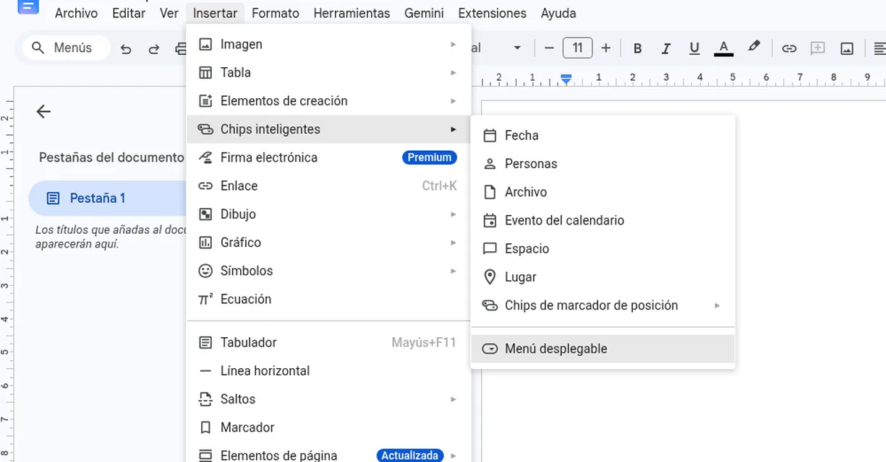
Paso 2: elegí un desplegable
Se abre una lista con DESPLEGABLES DEL DOCUMENTO (ahí está Nuevo desplegable) y DESPLEGABLES PREDEFINIDOS: Estado del proyecto y Estado de la revisión. En el ejemplo escribimos «Estado: » y elegimos Estado del proyecto.
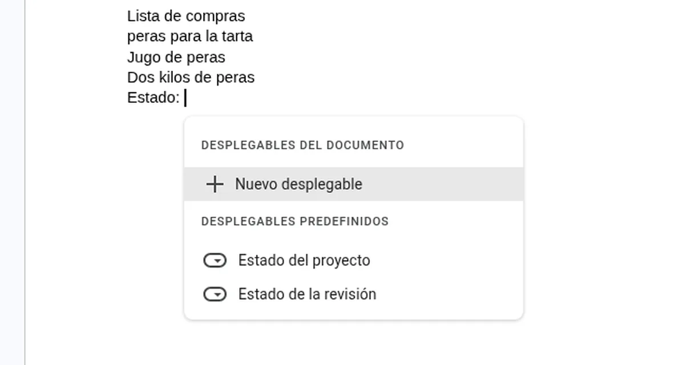
Queda el chip No iniciado, en gris.
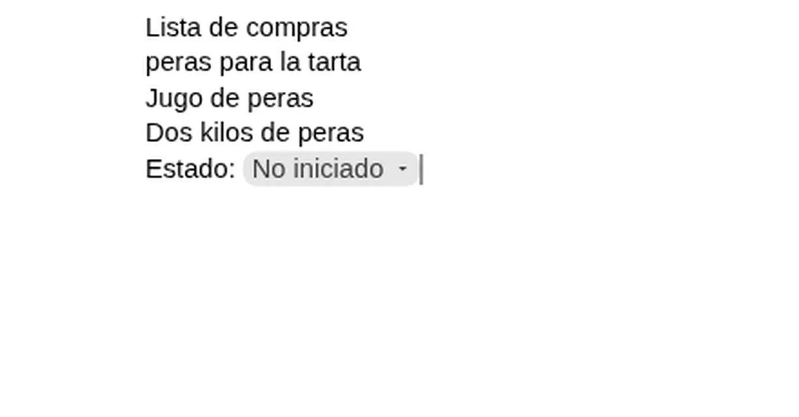
Paso 3: tocá el chip y elegí una opción
Hacé clic en el chip: aparecen las opciones No iniciado, Bloqueado (rojo), En curso (amarillo) y Completado (verde), y al final Añadir o editar opciones. Elegimos En curso y el chip cambió a amarillo.
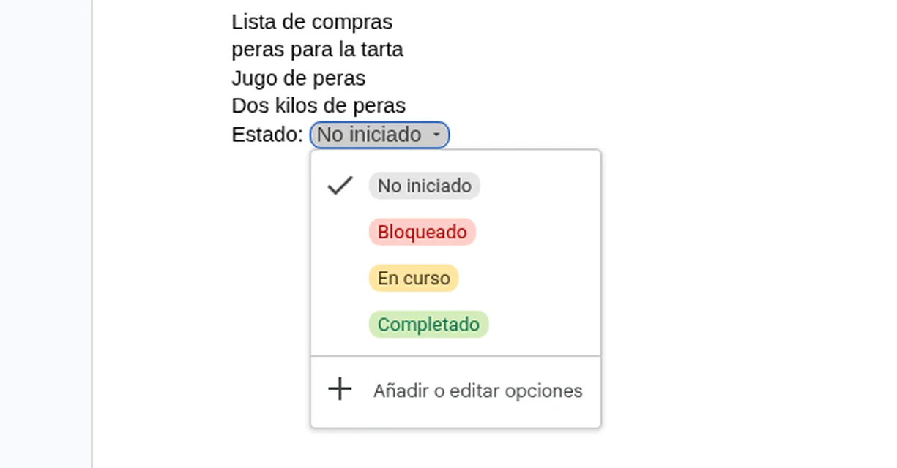
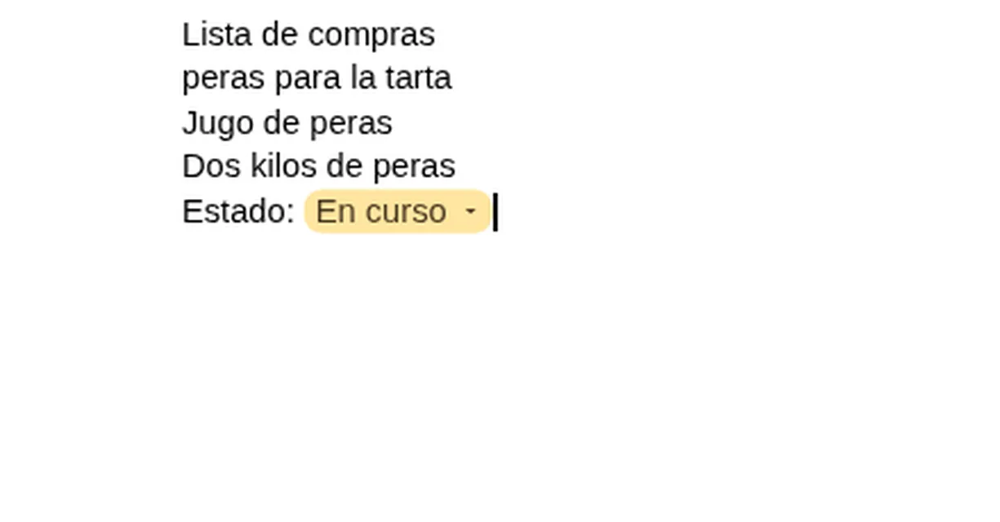
Paso 4: creá tu propio desplegable
En la lista del paso 2 elegí Nuevo desplegable. Se abre el panel Opciones del desplegable: en Nombre de la plantilla (trae «Configuración 1») escribí un nombre y completá las opciones; cada una tiene su color y un tacho para borrarla, y con + Nueva opción sumás otra. Después tocá Guardar. En el ejemplo: nombre «Estado de compra», opciones «Pendiente» y «Comprado».
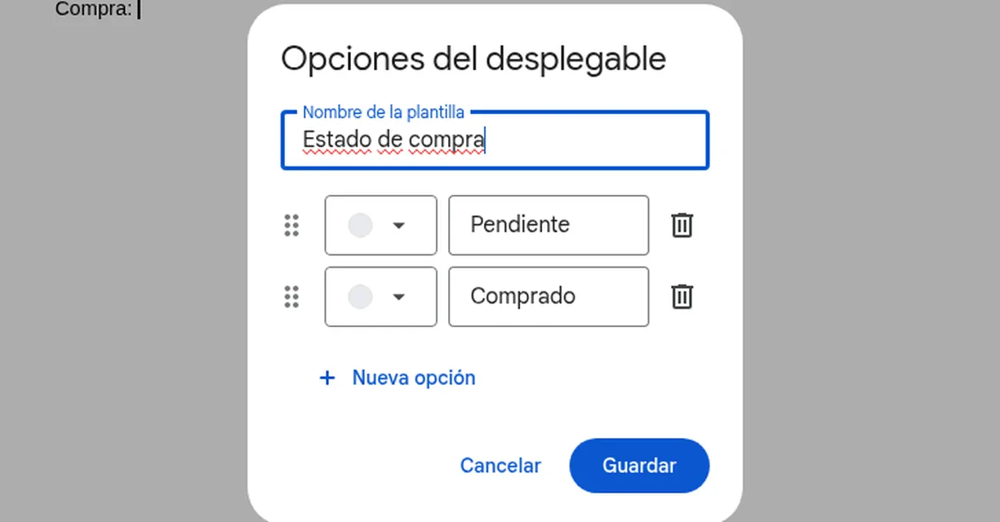
Queda el chip Pendiente.
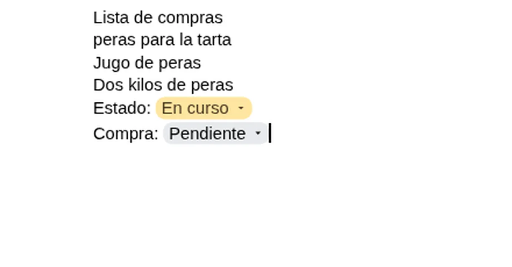
Paso 5: cambiá las opciones de un desplegable
Para cambiar un desplegable que ya creaste, hacé clic en el chip y elegí la última opción, Añadir o editar opciones (la ayuda la llama «Agregar/editar opciones»). Se abre el mismo panel Opciones del desplegable para editar el nombre y las opciones (mientras no cambiás nada, Guardar aparece deshabilitado). Si no querés cambiar nada, tocá Cancelar.
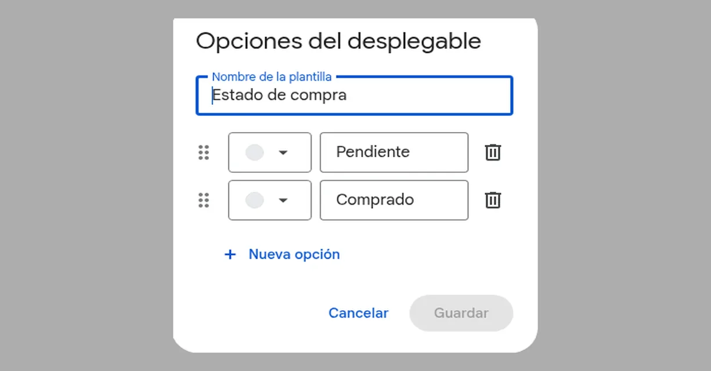
Dato: los desplegables que creás quedan guardados en el documento, en DESPLEGABLES DEL DOCUMENTO, aunque después borres el chip.
Paso 6: chips de marcador de posición
Sirven para dejar un chip que un colaborador complete después. Andá a Insertar → Chips inteligentes → Chips de marcador de posición y elegí el tipo de dato: Fecha, Persona, Archivo, Evento del calendario o Lugar. En el ejemplo escribimos «Fecha de entrega: » y elegimos Fecha.
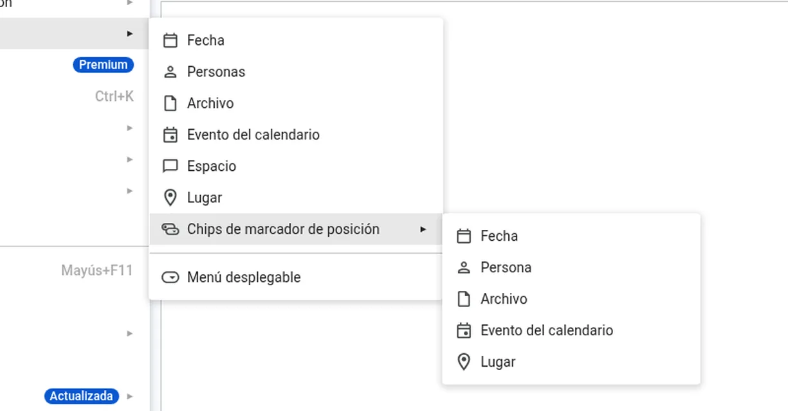
Queda el chip Fecha, vacío, esperando el dato.
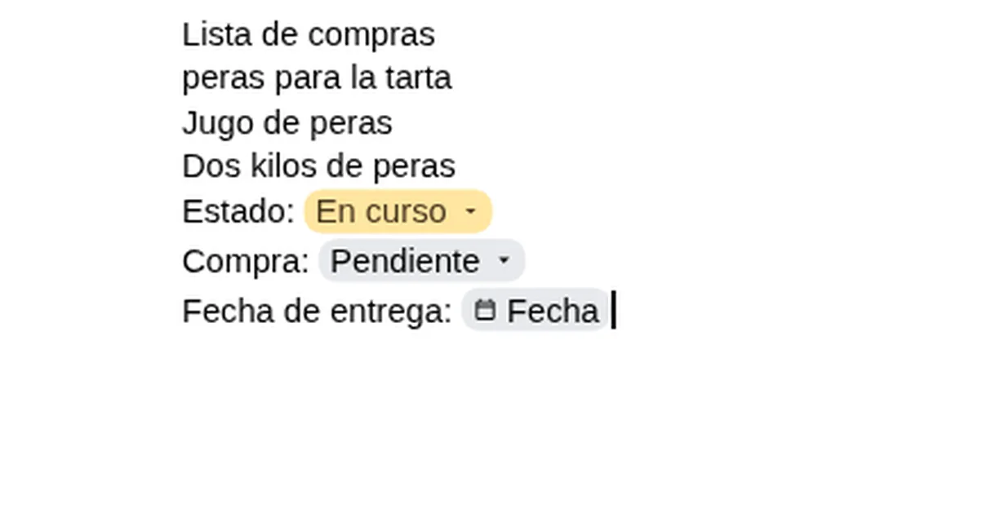
Al tocarlo, el de Fecha abre un calendario para elegir el día (con Hoy, Establecer hora, Zona horaria y Aceptar).
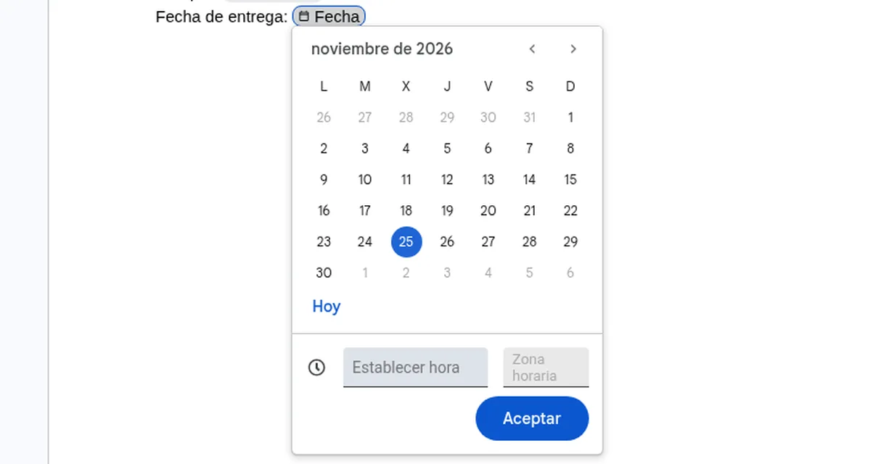
Paso 7: más rápido, con @
Escribí @menú desplegable en el renglón: en CHIPS INTELIGENTES aparece Menú desplegable. Elegilo de la lista (la ayuda de Google indica escribir «@menú desplegable» y presionar Intro). (El menú @ también sugiere archivos y sitios: en la captura los difuminamos.)
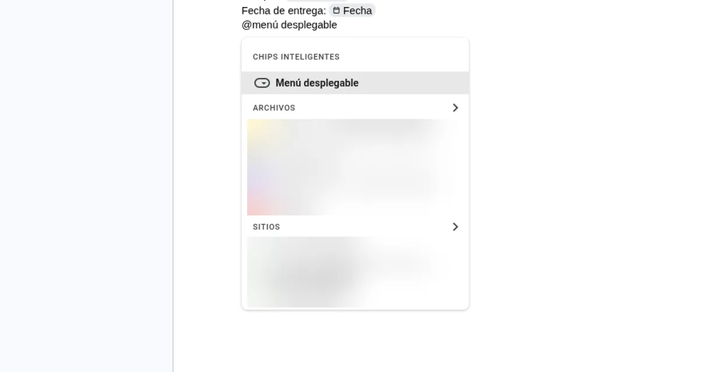
Al final borramos los chips y el documento quedó como al principio.
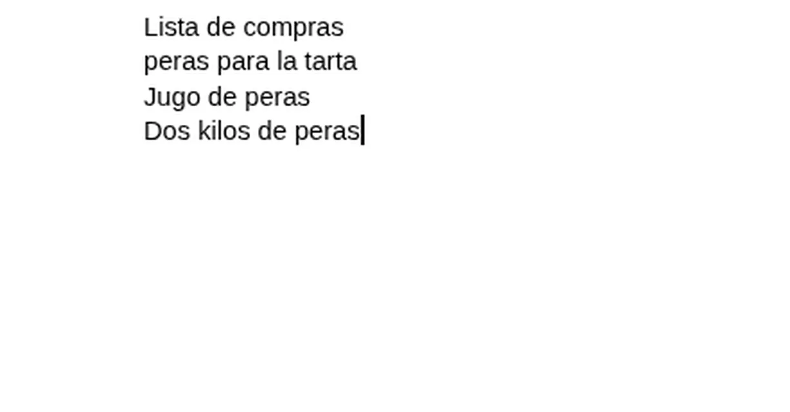
Fuentes oficiales: Cómo usar Documentos de Google con un lector de pantalla (agregar o editar un menú desplegable), Cómo insertar chips inteligentes en Documentos de Google y Agrega elementos con el menú @. Mirá también el menú Insertar completo (video: Google Docs: menú Insertar paso a paso) y la lección anterior, Chips inteligentes: fecha, personas, archivo y lugar.
Mirá el Short
Estreno del Short: 02/12/2026 · 09:00 (hora Argentina)
Video relacionado: Google Docs: menú Insertar paso a paso (tutorial completo) — el video largo del menú Insertar (verlo en YouTube).
Fuente oficial: Ayuda de Editores de Documentos de Google. Capturas propias en un documento de ejemplo («Lista de compras»). El video usa voz generada con IA.